“通过”仅指本例目标；所有网站效果等价性均未验证。点击每项可查看原图、产物、网站公开说明和限制。
先看这些问题
- 放大验证的是插值，不是AI细节恢复。
- 局部重绘首次输出改动全图；蒙版合成后区域外像素可精确保留。
- 扩图与空房装修未通过几何/画幅保留条件。
- 抠图残留白斑，家具存在身份漂移，GLB是粗略参数化近似。
- 浏览器交互超时，网站模式与同输入出图仍待核实。
AI模型渲染（类似渲染器） 部分通过
evai-model-render
观察：光影改善；窗、门、蓝沙发等语义锚点保留。
限制：原木纹、织物和像素有重绘；未测试真实模型、贴图导入。
契约：部分对齐：网站以原效果图/照片保材质渲染为核心，Skill还扩展了真实模型路线。
网站目录：轻松实现保留材质贴图的渲染，见证AI渲染的强大能力
网站详情：AI 精细渲染保材质工具，上传原始效果图或照片，智能重渲染光影、氛围与细节，同时保留原有贴图与材质质感，不破坏结构。适用于建筑、景观、室内家装等场景，快速获得渲染器级别的高质量出图。


家装渲染 样本通过
evai-home-render
观察：暖色住宅表现完成；一窗一门及主要家具位置可辨认。
限制：仅客厅单样本；未覆盖各空间、风格档位与精确几何。
契约：核心目标对齐
网站目录：客厅、卧室等多个空间，新中式、现代、欧式等三十几种风格，随心所欲渲染
网站详情：EVAI 家装渲染支持卧室、客厅、书房等多种室内家装场景，一键生成高质量 AI 效果图，支持多种风格与灯光氛围选择。

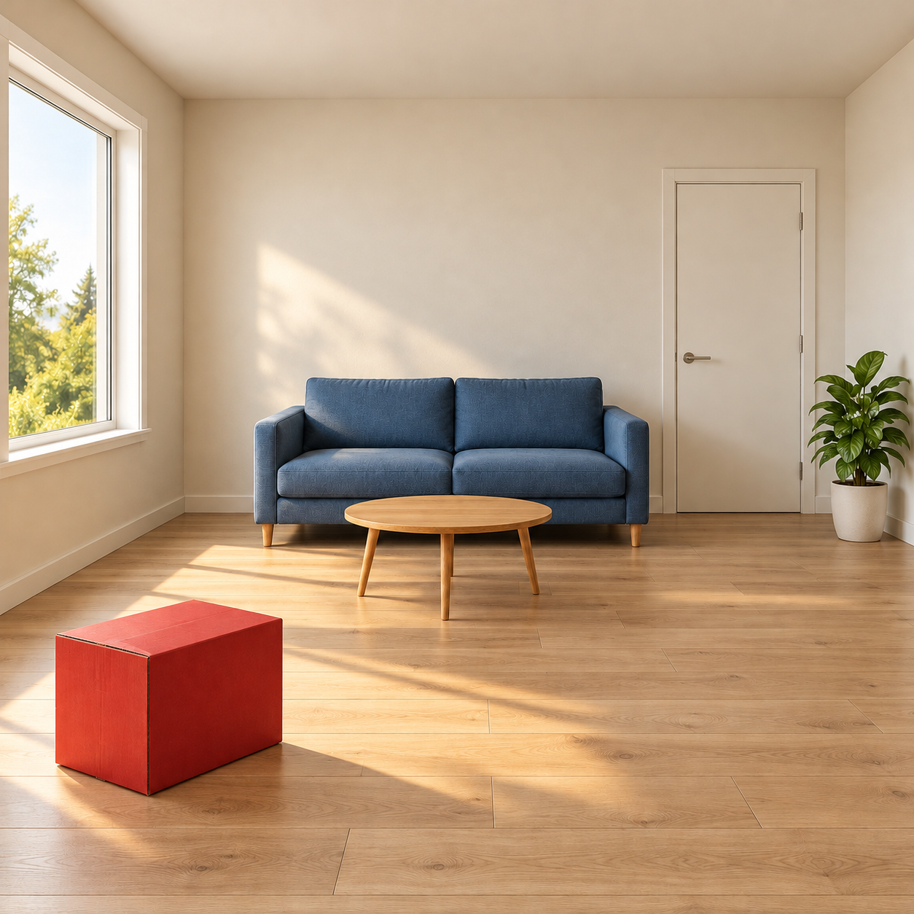
工装渲染 部分通过
evai-commercial-render
观察：保留房间与家具并加入接待区装饰画。
限制：样本仍接近客厅；不能证明餐饮、零售、办公功能组织。
契约：核心目标对齐，商业场景覆盖待测
网站目录：办公室、餐厅、商城、展厅等多个空间，一键渲染
网站详情：EVAI 工装渲染支持办公、商业、餐饮等多种室内工装场景，一键生成高质量 AI 效果图，支持多种风格与灯光氛围选择。

AI洗图 部分通过
evai-image-enhance
观察：木纹、布料表现有变化，主体可辨认。
限制：没有失真真值、清晰度客观指标；未验证两种增强模式。
契约：部分对齐：未显式映射网站“控制更精准/灵感更丰富”模式。
网站目录：轻松实现保留材质贴图的渲染，见证AI渲染的强大能力；提升图像的细节，适合需要提升细节的图片
网站详情：EVAI AI 质感增强工具支持对建筑/室内效果图进行细节与材质纹理增强，提供“控制更精准 / 灵感更丰富”两种增强模式，并可一键洗图优化噪点、锯齿与发灰问题，适用于渲染图精修与成果图输出。

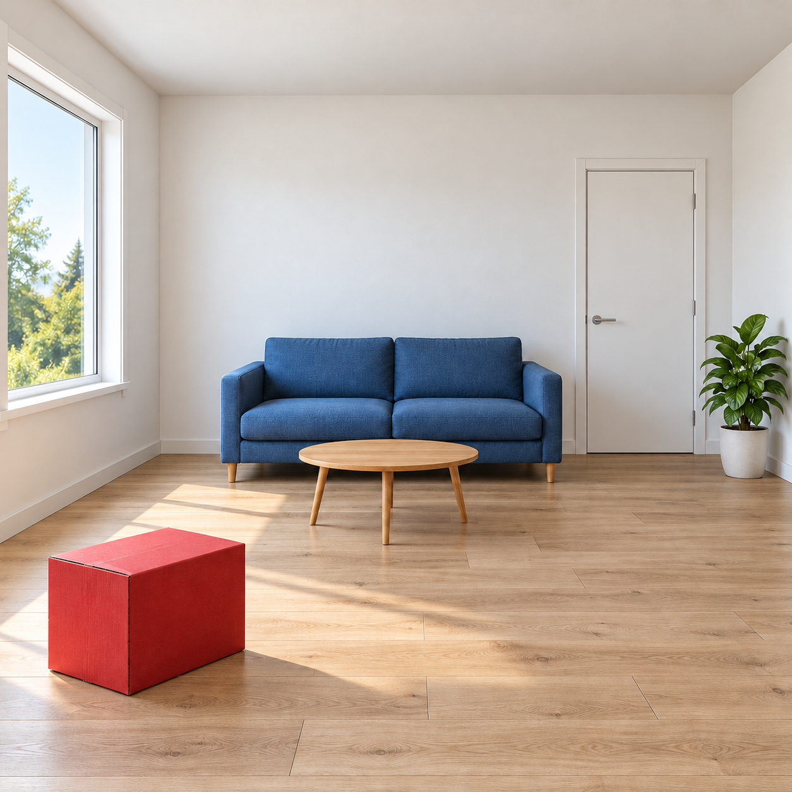
软装硬装替换 样本通过
evai-replace-interior-elements
观察：木饰面与米色窗帘两项目标实现。
限制：未验证参考产品逐像素保真，几何仅视觉核对。
契约：核心目标对齐
网站目录：软装硬装替换
网站详情：EVAI 万物迁移支持对图片中的建筑、景观、家具、车辆等物体进行智能识别与迁移，可实现局部替换、位置调整、风格统一与元素增删，帮助快速生成多版本方案与创意效果图。

室内局部渲染 样本通过
evai-interior-local-edit
观察：石材区域完成；依Skill采用合成后，区域外变化像素为0。
限制：首次生成区域外99.11%像素发生变化；本项通过依赖人工定位蒙版与合成。
契约：核心目标对齐；生成工具单独执行不能提供局部像素保证。
网站目录：添加一张氛围参考图，提升底图细节，改变氛围（结构和造型保持一致）
网站详情：EVAI 局部渲染 Pro（室内家装）支持对客厅、卧室、书房等效果图进行局部 AI 重绘与细节增强，可选中局部区域进行材质优化、光影调整、构图微调等操作，避免整图重算，提升精修效率。

首次生成（补救前）

AI材质替换 部分通过
evai-material-replace
观察：蓝色布艺替换成棕色皮革，沙发位置保留。
限制：缝线/表面重新生成；非目标区也改变，未完整满足精确保留。
契约：核心目标对齐，约束未全满足
网站目录：一键替换材质，轻松实现软装硬装替换
网站详情：EVAI 材质替换工具支持对图片中的沙发、桌椅、墙面、地面等物体进行一键材质更换与细节重绘，智能保留结构与光影，仅替换纹理和材质效果，适用于室内软装搭配、家居选材对比、效果图方案推敲等场景。

文生图 样本通过
evai-text-to-image
观察：实际生成含一窗一门、蓝双人沙发、木圆桌、绿植、红箱的室内图。
限制：仅室内意向样本；不是实际场地或尺寸验证。
契约：核心目标对齐
网站目录：比肩midjourney，输入文字描述，快速获取室内等灵感意向图；比肩midjourney，输入文字描述，快速获取建筑、景观等灵感意向图
网站详情：EVAI 文生图支持输入中文或英文提示词，一键生成多风格、高质量的创意图片，适用于建筑方案氛围图、景观概念图、电商主图、插画与海报等多种场景。

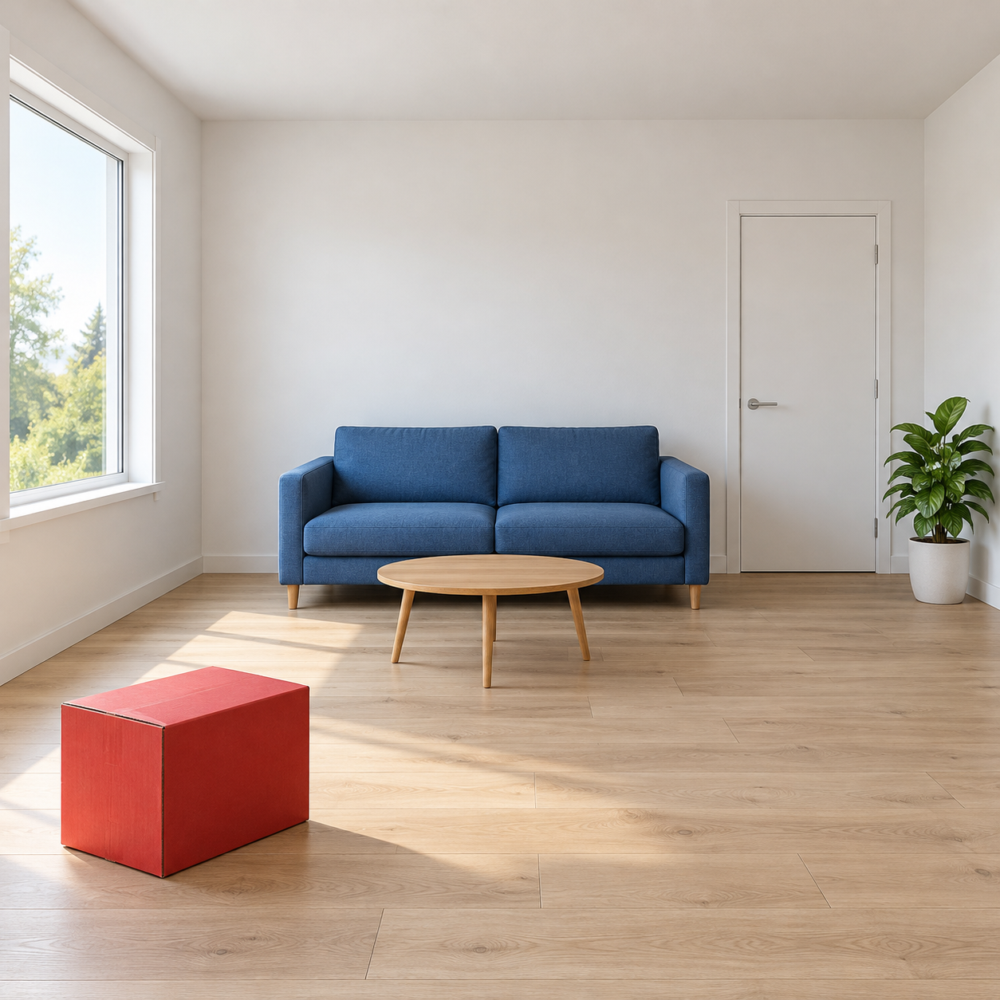
室内风格迁移 样本通过
evai-interior-style-transfer
观察：暖木色日式表现；原门窗与主要家具仍在。
限制：只测文字指定风格；未测风格参考图片分支及精确结构。
契约：核心目标对齐
网站目录：保证主体结构不变，色彩和材质重新搭配，使得房间换个风格
网站详情：EVAI 室内风格迁移支持将卧室、客厅、餐厅等室内图片一键转换为北欧、日式、现代极简、法式复古等多种设计风格，并保留原有空间结构，实现快速风格替换与方案对比展示。

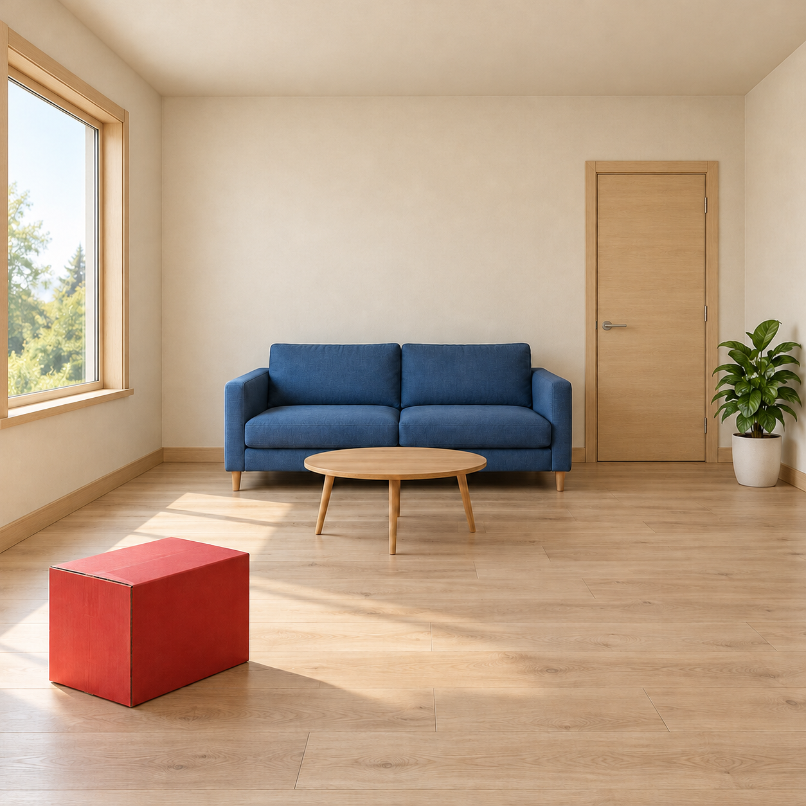
一键彩平图 样本通过
evai-floorplan-colorize
观察：三房间上色；原图非白像素逐像素保持。
限制：人工确定分区，不证明任意户型自动识别；网站详情偏总平。
契约：来源冲突：目录列室内一键彩平，详情说明道路/绿地/水体/建筑总平。
网站目录：一键完成对彩平图的渲染
网站详情：EVAI 彩平图上色工具支持对黑白彩平图、线稿平面图进行一键智能上色，自动识别道路、绿地、水体、建筑等区域，生成规范且美观的彩色平面图，适用于总平面设计、规划方案汇报与学生作业出图提效。


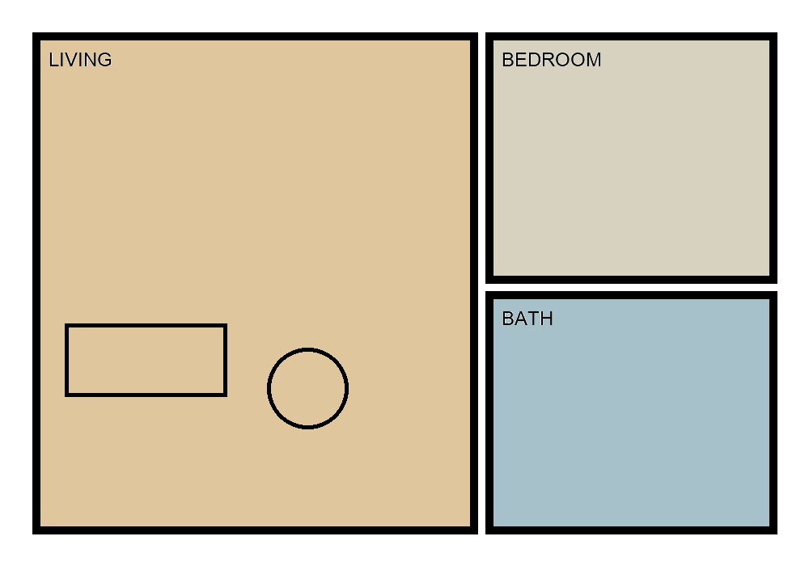
毛坯装修 未通过
evai-empty-room-furnish
观察：空房草图变成含蓝沙发与圆桌的房间。
限制：1000×700草图输出为1254×1254；房间比例与门窗位置关系改变；本例不是实拍毛坯。
契约：目标对齐，样本保留约束未满足
网站目录：毛坯装修
网站详情：EVAI 空房间装修布置工具支持卧室、客厅、书房等多种室内空房场景，一键自动完成家具摆放、软装搭配与风格渲染，快速生成高质量装修效果图，适用于户型展示、家装方案推敲与效果对比。

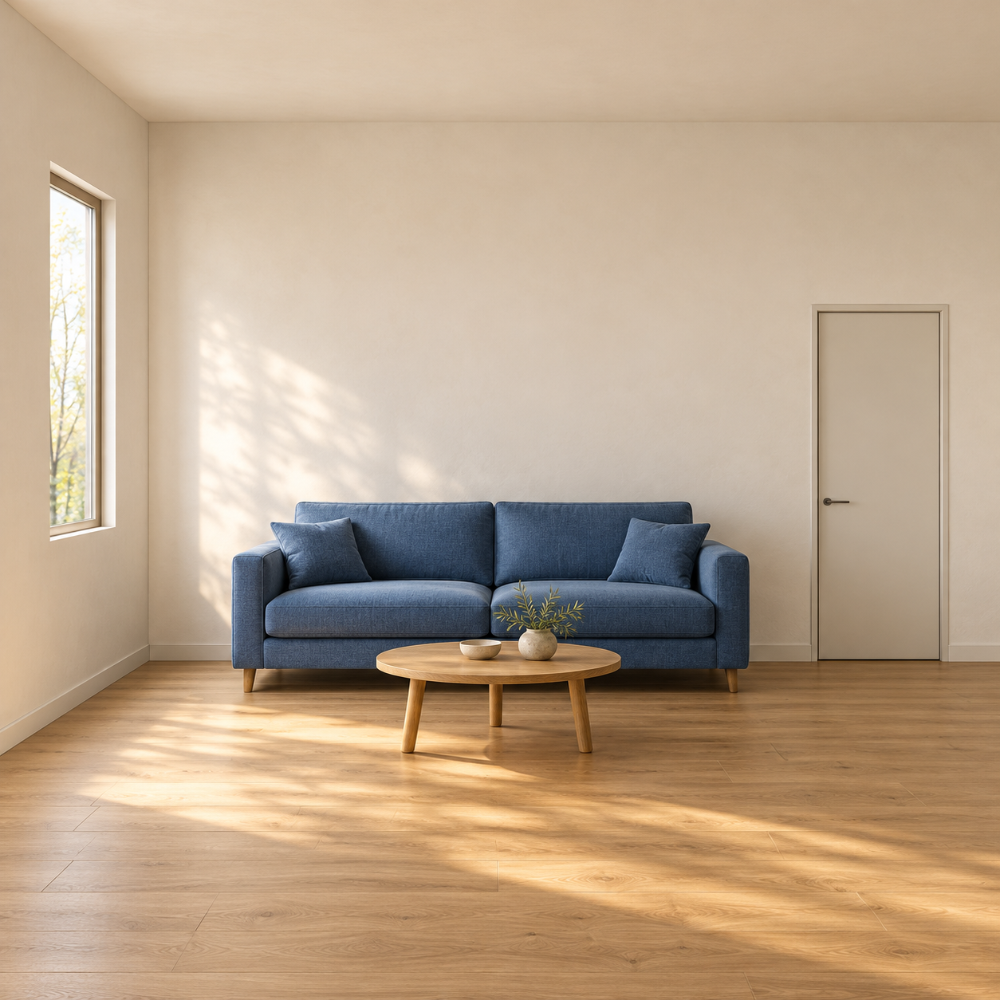
建筑渲染 样本通过
evai-building-render
观察：浅色外墙表现完成；两层、四窗、单门、平顶保持可辨认。
限制：输入为已有合成效果图，白模/手绘分支未测；不证明工程几何精度。
契约：核心目标对齐
网站目录：建筑草图、手绘图、效果图、白模等，一键渲染，上百种风格可选
网站详情：Evai 建筑外观 AI 渲染支持透视图、鸟瞰图、多风格建筑立面设计，一键生成高质量建筑外观方案，适用于别墅、公建、住宅等多种场景。


室外局部渲染 部分通过
evai-exterior-local-edit
观察：入口门改成暖木色，窗洞数量保持。
限制：整张草地、表皮存在重绘；未做本项蒙版合成。
契约：核心目标对齐，局部隔离未全满足
网站目录：轻松修改图片细节
网站详情：EVAI 局部渲染 Pro（室内景观）支持对建筑与景观效果图进行局部 AI 重绘与细节增强，可选中局部区域进行材质优化、光影调整、构图微调等操作，避免整图重算，提升精修效率。

人物模特添加 样本通过
evai-add-people
观察：按目标在门左侧加入一名成人，地面接触与尺度基本合理。
限制：仅一人站姿；动作、人种、多人物控制未覆盖；非目标像素未锁定。
契约：核心目标对齐，控制项未全面测试
网站目录：在指定区域精准添加模特，支持动作与人种控制
网站详情：EVAI 人物模特添加支持在图片指定区域智能添加人物模特，可按动作、人种、穿搭等细节控制生成效果，保持原图构图与光影关系不变。

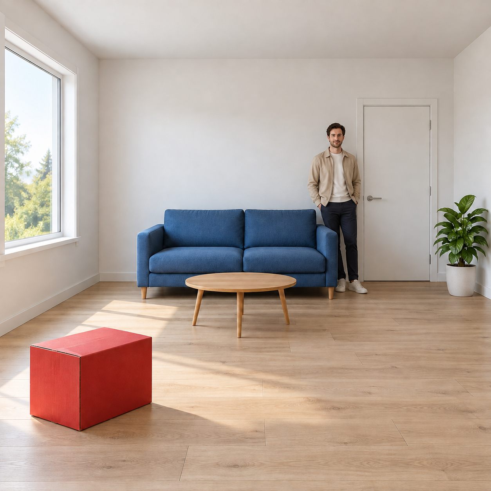
AI环境替换 部分通过
evai-environment-replace
观察：背景山林替换完成，主体四窗单门可辨认。
限制：请求淡阴天天空未明显实现，主体也存在轻微重绘。
契约：核心目标对齐，背景与主体隔离待补
网站目录：上传建筑效果图，一键替换建筑环境背景及配景内容
网站详情：AI 背景替换，上传建筑效果图，一键智能抠图并替换环境氛围与配景场景。支持森林溪水、城市郊区、广场铺地、乡村稻田等多种氛围风格，适用于建筑方案汇报、渲染提案与快速出图。

AI旧房改造 部分通过
evai-facade-renovation
观察：旧饰面改为干净白墙、深框和木门；两层四窗可辨认。
限制：只测外立面；网站详情说室内墙顶地软装，来源范围不一致。
契约：来源冲突：目录是外立面改造，详情是室内旧房局部更新。
网站目录：上传旧房照片，根据描述词重新改造旧房外立面，生成新的方案效果图
网站详情：EVAI 旧房局部改造支持对老房、翻新前效果图进行局部 AI 渲染，可针对墙面、顶面、地面、软装等区域进行智能替换与细节提升，让旧房空间快速焕新、对比改造前后效果。

室外风格迁移 样本通过
evai-exterior-style-transfer
观察：建筑水彩表现完成，体量及四窗门路可辨认。
限制：仅文字指定水彩；参考图迁移、精确结构锁定未测。
契约：核心目标对齐
网站目录：添加一张氛围参考图，提升底图细节，改变氛围（结构和造型保持一致）
网站详情：EVAI 风格迁移支持将建筑、景观、室内、产品等图片一键转换为指定艺术风格或渲染风格，可实现手绘风、插画风、赛博朋克、写实渲染等多种视觉效果，为方案演示与创意表达提供更多可能。

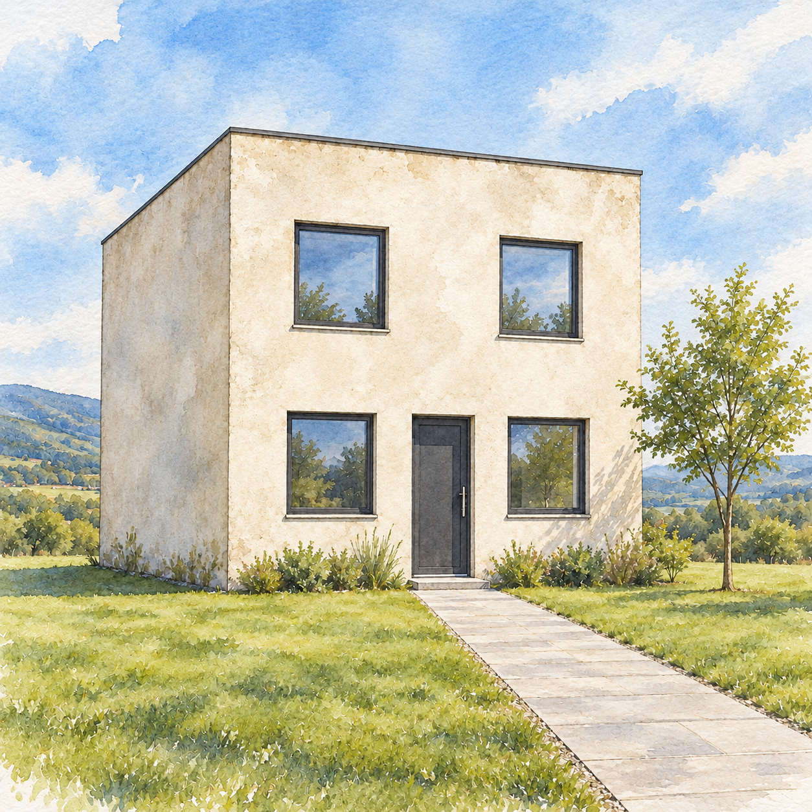
大鸟瞰渲染 样本通过
evai-aerial-render
观察：平面变斜鸟瞰；三建筑、中央横路、左下水池拓扑保持。
限制：楼高、窗洞、植被为推断，复杂城市与地形未测。
契约：核心目标对齐
网站目录：城市大鸟瞰、公园大鸟瞰、居住区大鸟瞰等，一键渲染，自动添加细节和色彩搭配
网站详情：EVAI 鸟瞰渲染支持建筑与景观的鸟瞰视角，一键生成高质量 AI 鸟瞰效果图，自动补充细节与环境元素，适合整体方案展示与汇报。


总彩平渲染 样本通过
evai-siteplan-colorize
观察：三个建筑、路、水体、绿地分色；原图非白像素保持。
限制：人工区域填色；未证明网站式自动识别与生成细节。
契约：核心目标对齐，自动化程度未证实
网站目录：一键完成对彩平图的渲染
网站详情：EVAI 总平渲染支持住宅、商业、景观等多种总平面图，一键生成高质量 AI 总彩平效果图，自动补充细节与配色，适合方案汇报与出图。

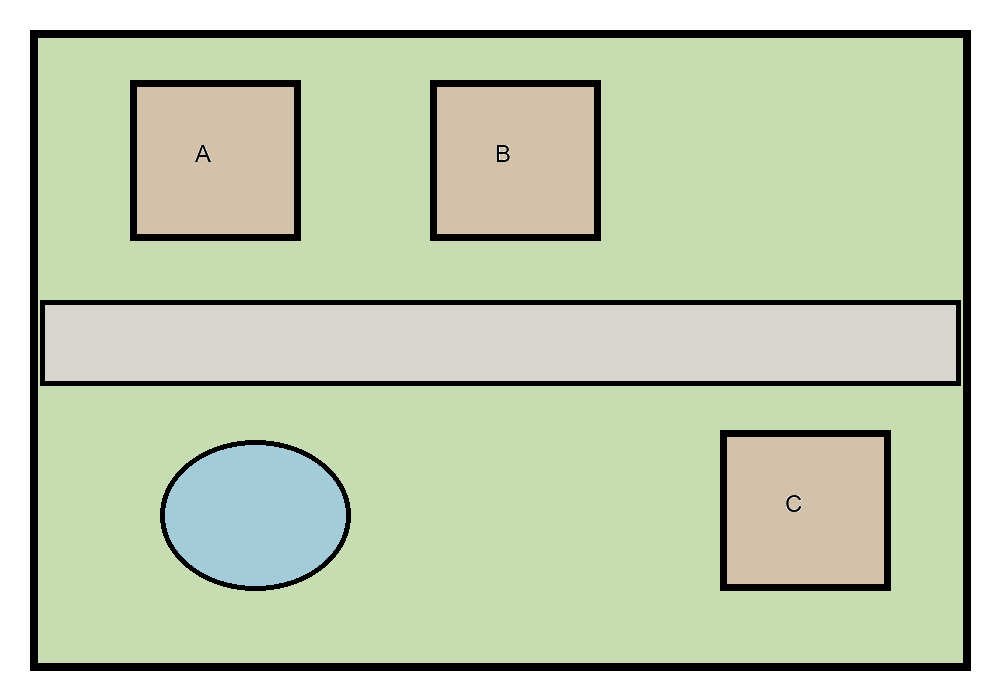
景观渲染 样本通过
evai-landscape-render
观察：草坪改成低草与白花自然花园；原路径和建筑保持可辨认。
限制：仅小庭院现成效果图；未测大型景观草图、公园及高差。
契约：核心目标对齐
网站目录：景观草图、手绘图、效果图、白模等，一键渲染，上百种风格可选
网站详情：EVAI 景观渲染支持公园绿地、住宅景观、商业街区等多种户外景观场景，一键生成高质量 AI 景观效果图，支持多种植物搭配、铺装材质与光照氛围。

AI视角转换 部分通过
evai-viewpoint-change
观察：生成了非镜像的新视角，门窗和家具左右关系可辨认。
限制：15°相机角度无法验证；无同模型相机，隐藏面属于推断。
契约：部分对齐：不能证明单图跨视角几何及光影一致。
网站目录：指定任意视角，快速生成不同视角的效果图
网站详情：Evai AI 转换视角支持将单张图像自动生成多角度视图，保持结构一致与光影连贯，适用于建筑、景观与室内方案的视角拓展与展示。

氛围转换 样本通过
evai-atmosphere-change
观察：白天转换蓝调黄昏，未增加可见灯具。
限制：仅时间段变换；季节、雨雾、积雪及原材质精确保留未测。
契约：核心目标对齐
网站目录：不改变图像基本结构等，一键自由切换图像氛围
网站详情：EVAI 氛围转换支持对建筑、景观、室内等图片进行 AI 环境氛围调整，可智能切换季节、时间段与天气效果，实现晴天夜景、雨雾氛围、日落黄昏等多种光影场景，适用于方案演示与情绪氛围渲染。

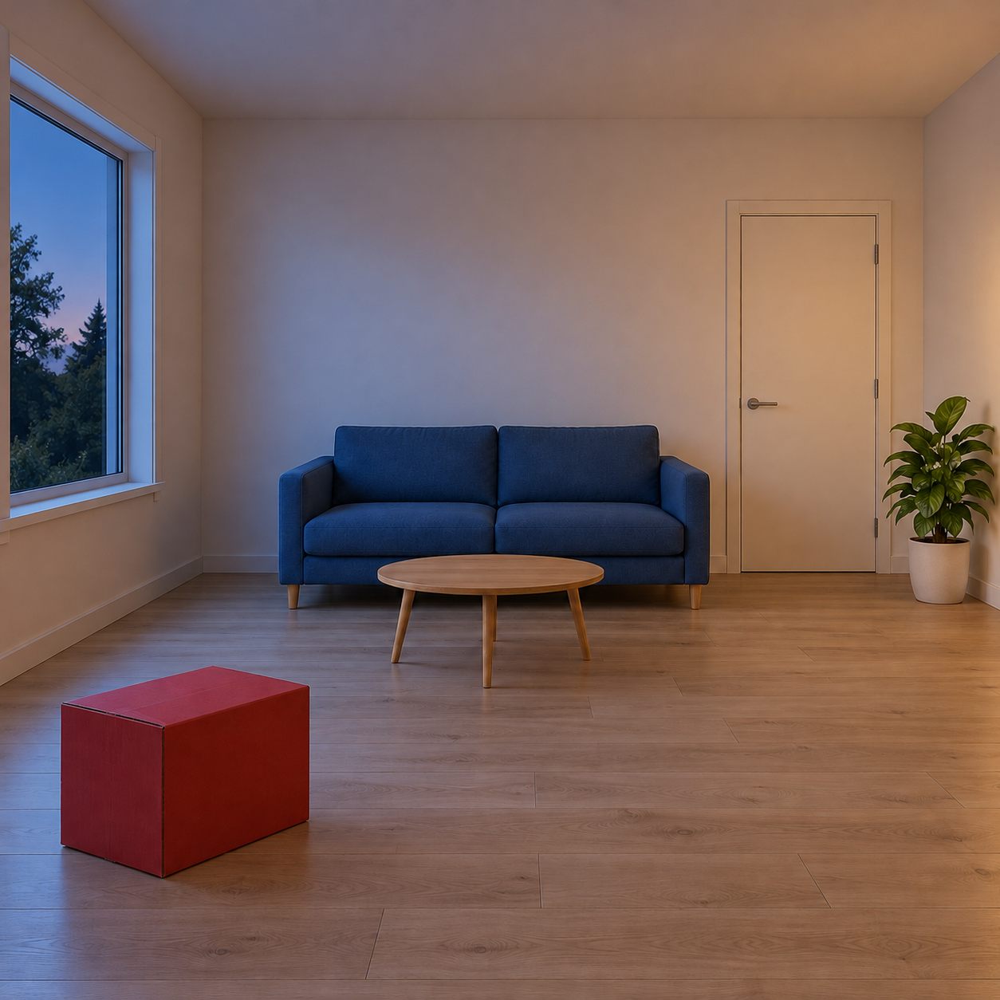
建筑万物迁移 部分通过
evai-exterior-object-transfer
观察：参考青椅加入右前草地，建筑主要锚点可辨认。
限制：椅子显示很小，细节与腿数难可靠审核；非目标区有重绘。
契约：核心目标对齐，精确产品身份未证实
网站目录：一键将建筑、景观物体迁移替换到效果图中指定位置
网站详情：EVAI 万物迁移支持对图片中的建筑、景观、家具、车辆等物体进行智能识别与迁移，可实现局部替换、位置调整、风格统一与元素增删，帮助快速生成多版本方案与创意效果图。

室内AI棚拍 部分通过
evai-furniture-studio
观察：生成单把青色壳椅棚拍，四腿和总体轮廓可辨认。
限制：椅壳与木纹经过重绘；没有采用原产品像素合成，不符合严格商品保真。
契约：核心目标对齐，产品身份保真未全满足
网站目录：一键为家具、家饰等生成棚拍效果图
网站详情：EVAI 室内棚拍支持家居、电商、室内产品等多种棚拍场景，一键生成高质量 AI 棚拍效果图，支持多种布光风格、背景材质与空间氛围选择。

室外AI场景 部分通过
evai-furniture-outdoor
观察：参考青椅放到室外铺装，落地与日光基本合理。
限制：椅壳比例、木纹与庭院被重绘；未采用原产品合成。
契约：核心目标对齐，精确产品保真未证实
网站目录：一键为家具、家饰等生成室外电商效果图
网站详情：EVAI 室外棚拍支持户外家具、景观小品、电商户外产品等多种棚拍场景，一键生成高质量 AI 棚拍场景图，支持多种自然环境与光照氛围选择。

家具替换 部分通过
evai-furniture-replace
观察：蓝沙发移除并换成一把青椅；圆桌、门窗、红箱仍在。
限制：参考椅型存在重绘，背景及尺度未锁定；未验证严格商品一致。
契约：核心目标对齐，约束未全满足
网站目录：一键替换家具、家饰等
网站详情：EVAI 万物迁移支持对图片中的建筑、景观、家具、车辆等物体进行智能识别与迁移，可实现局部替换、位置调整、风格统一与元素增删，帮助快速生成多版本方案与创意效果图。

一键抠图 部分通过
evai-image-cutout
观察：输出真RGBA，含透明像素，保留原图RGB。
限制：白底椅子样本脚边残留白斑和接触阴影；未测复杂背景/毛发/玻璃。
契约：部分对齐：仅人工可审白底分割，未证明一般主体自动抠图。
网站目录：自动扣除单体
网站详情：EVAI 智能抠图工具支持对人物、建筑、产品、景观等图片主体进行一键自动抠图，智能识别前景与背景，生成高质量透明 PNG 素材，适用于效果图后期合成、电商主图制作、方案汇报与海报设计等场景。

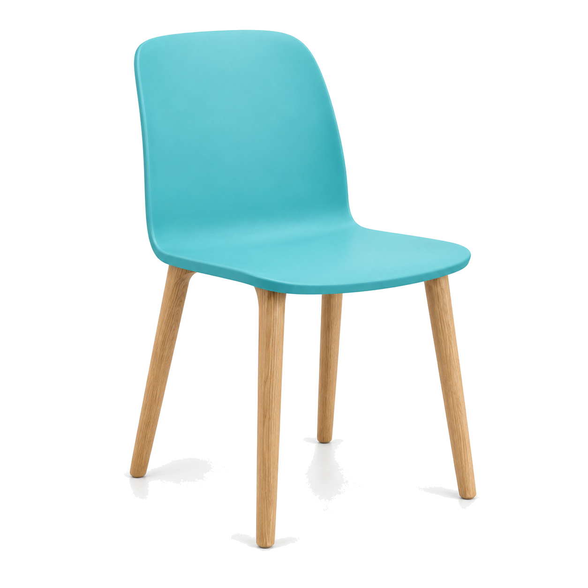
棋盘格验收：脚边白斑与残留阴影可见。

拼图美化 部分通过
evai-collage-beautify
观察：拼图转为统一客厅场景，蓝沙发和青椅可辨认，标签去掉。
限制：产品轮廓、腿部及沙发细节被重画；精确款式一致未满足。
契约：核心目标对齐，产品身份约束待补
网站目录：软装拼图直接转化成精致效果图
网站详情：EVAI AI 质感增强工具支持对建筑/室内效果图进行细节与材质纹理增强，提供“控制更精准 / 灵感更丰富”两种增强模式，并可一键洗图优化噪点、锯齿与发灰问题，适用于渲染图精修与成果图输出。


AI图转3D 部分通过
evai-image-to-3d
观察：导出并重读GLB：5个网格、444三角面，均封闭，三视角可查看。
限制：依据参考手工推断参数；椅壳方折且腿端穿壳；不是自动AI重建，不满足精确椅型。
契约：部分对齐：真实网格交付可执行，自动图转3D和多格式质量未证实。
网站目录：将透明png图片转化为令人惊叹的3D模型，改变您的工作流程。
网站详情：Evai 提供 AI 图转3D 一站式解决方案，在线上传图片即可生成高质量 3D 模型，并支持多种导出格式。
 下载近似GLB
下载近似GLB图片转提示词 样本通过
evai-image-to-prompt
观察：基于实际室内图输出英文Prompt，覆盖构图、材质、光照。
限制：人工由当前Codex执行单样本；未验证文字能复刻原图或网站反推质量。
契约：核心目标对齐；本次使用英文，与详情一致。
网站目录：将图片转化为文字描述，适合需要文字描述的图片
网站详情：EVAI 图片反推提示词工具可对建筑、室内、景观、产品等效果图进行智能分析，一键生成可复用的英文 Prompt 描述，涵盖画面风格、构图、光影、材质与环境要素，适合用于文生图、效果图复刻与灵感拆解。
# 图片转提示词：实际样本 输入：base-scene.png（本次生成的合成室内测试图片）。以下是基于实际可见内容整理的英文Prompt，不含真实项目或厂家信息。 A bright minimal living room viewed from a wide front three-quarter angle. One large rectangular window on the left wall, plain warm white walls, and a closed white door on the rear-right wall. A blue fabric two-seat sofa sits against the back wall, with two seat cushions and two back cushions. A small round light-oak coffee table stands in front of the sofa. A broad-leaf green potted plant in a white planter sits at the far right. One red cardboard box rests on the near-left oak floor. Soft midday sunlight enters from the left, casting directional shadows across natural wood flooring. Neutral warm palette with blue and red accents, realistic upholstery texture, clean architectural interior photography, no people, no text, no logo. 可见事实：左窗、右后门、蓝色沙发、圆木桌、右侧绿植、左前红箱、左侧自然光。未断言房间尺寸、品牌、材料型号或拍摄设备。
提示词扩词 样本通过
evai-prompt-expand
观察：将“卧室更温馨，布局家具门窗不变”扩成可用英文编辑提示。
限制：仅文字语义审核；未运行后续卧室出图验证。
契约：核心目标对齐
网站目录：将提示词扩充，适合需要扩充提示词的文案
网站详情：EVAI 提示词扩写工具支持对简短或不完整的文字提示进行智能润色和扩写，自动补全场景、风格、光影与细节描述，生成适用于 Midjourney、Stable Diffusion 等文生图模型的高质量 Prompt，帮助你更快获得理想效果图。
# 提示词扩词：实际样本 原始需求：把这个卧室变得更温馨，布局、家具、门窗保持不变。 Edit the supplied bedroom image to create a warmer, calmer atmosphere. Preserve the exact room layout, wall and ceiling boundaries, existing furniture shapes and positions, doors, windows, and camera framing. Adjust only lighting softness, exposure, and overall color temperature toward a gentle warm neutral balance. Keep the original material identities and dominant furniture colors. Maintain believable natural light direction and contact shadows. Do not add or remove furniture, lamps, doors, windows, decorations, text, or logos. 假设：目标是编辑已有卧室图；“温馨”主要通过光照与色温体现。没有擅自加入落地灯、地毯或新家具。未实际生成卧室图片，因为此功能的交付是提示词。
清晰度放大 部分通过
evai-image-upscale
观察：1254×1254等比放大至2508×2508，尺寸正确。
限制：仅LANCZOS插值；未测AI细节恢复，未覆盖2K/4K/6K/8K。
契约：部分对齐：插值放大不能等同网站宣称的AI分辨率与质感提升。
网站目录：提升图像清晰度，适合模糊的图片
网站详情：EVAI AI 分辨率提升工具提供 2K/4K/6K/8K 多档输出选项，支持在提升质感与细节的同时进行高清分辨率输出，适用于方案汇报、海报打印与大屏展示等场景。

无损压缩 样本通过
evai-image-compress
观察：PNG从1880460减至1806117字节，少74343字节，像素与尺寸不变。
限制：本例减少约3.95%，不保证大幅压缩；JPEG默认原字节保留。
契约：核心目标对齐；网站目录“按比例缩小尺寸”与详情“保清晰度压缩”有口径差异。
网站目录：按比例缩小图片尺寸
网站详情：EVAI 无损压缩工具可对效果图、彩平图、照片等图片进行智能压缩，在尽量不损失清晰度和细节的前提下，大幅减小文件体积，方便投标资料、方案汇报 PPT、网站与公众号上传使用。

智能扩图 未通过
evai-image-outpaint
观察：输出横图1536×1024；诊断合成1881×1254可恢复原区域像素。
限制：原图1254×1254却输出高度1024，主体被缩放；贴回原图后左右接缝明显。
契约：目标对齐，原尺度与接缝约束未满足
网站目录：自动联想区域，完成对图片内容的扩大
网站详情：EVAI 扩图工具支持对建筑效果图、室内渲染、景观彩平等图片进行智能扩图补全，在保持主体风格与透视一致的前提下向四周延展画面，用于改比例、补边、适配长图/海报/封面等出图需求。

诊断合成：原图像素保留，但接缝不通过。
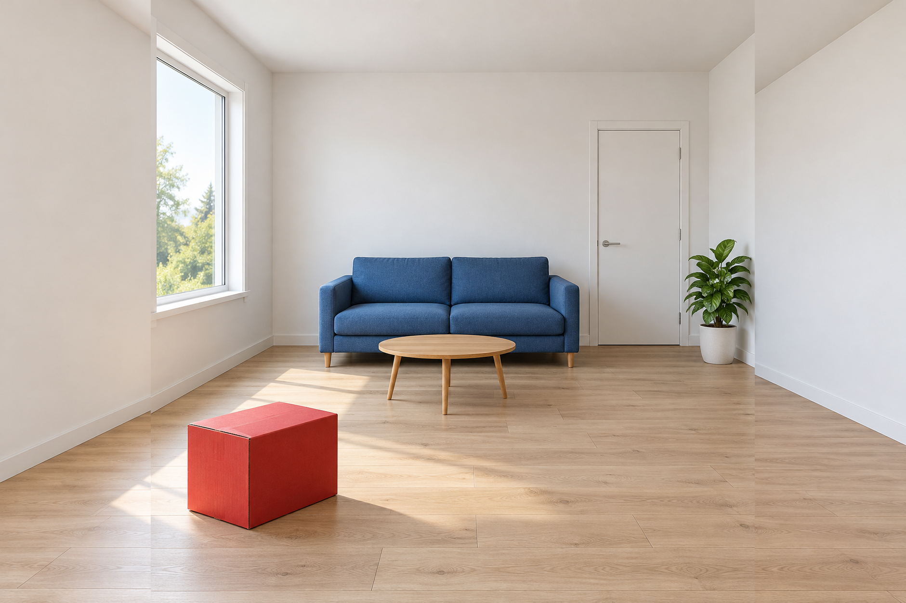
图片转线稿 样本通过
evai-image-to-lineart
观察：输出白底黑色边缘线稿，1254×1254，门窗家具轮廓可辨认。
限制：仍有材质碎线；栅格线稿，不是矢量/CAD或施工图。
契约：核心目标对齐，AI/工程精度未证明
网站目录：一键将室内外照片，精模等转为线稿
网站详情：EVAI 图片转线稿工具支持将建筑效果图、景观彩平、室内渲染和实景照片一键转换为干净的黑白线稿，保留结构与细节，适用于方案推敲、手绘上色底图、教学示意图以及施工图表达等多种场景。

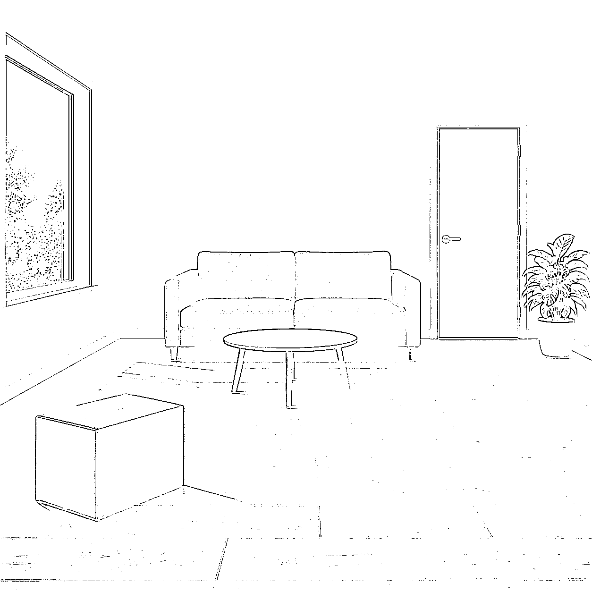
物体移除 部分通过
evai-object-remove
观察：红箱和其阴影被移除，地板补全。
限制：整图光照和其他像素也变动；未做本项局部合成。
契约：核心目标对齐，非目标区保真未全满足
网站目录：让小物体直接消失，不用再p图
网站详情：EVAI 去水印擦除工具支持对图片中的文字水印、Logo、杂物、人影等局部元素进行智能擦除，自动补全背景纹理，尽量避免明显修痕，适用于效果图美化、照片去水印、宣传图精修与电商主图处理等场景。

本轮未修改Skill定义；只新增验证记录。所有图片为本轮合成测试素材，不包含用户项目。